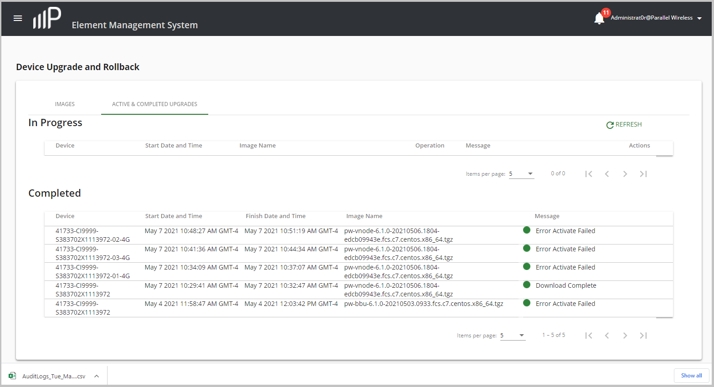

Use this task to view the status of device downloads and
device upgrades.
In the left navigation pane, click Devices > Upgrade.
In the Device Upgrade and Rollback window, click the ACTIVE UPGRADES
& ROLLBACKS tab.
In the Device Upgrade and Rollback window that appears, you can view the
status of individual device upgrades in the In Progress section for
devices that are in the process of being upgraded and in Completed
section for device upgrades that completed or failed:

(Optional) Click Refresh to refresh the Device Upgrade and
Rollback window to see if the status of the device changes in
real-time.
(Optional) Click the Items per page drop-down list in either the In
Progress or Completed section to control the amount of completed
device upgrades in these sections. The default is 5 devices per section. Up to
25 devices per section can be selected.